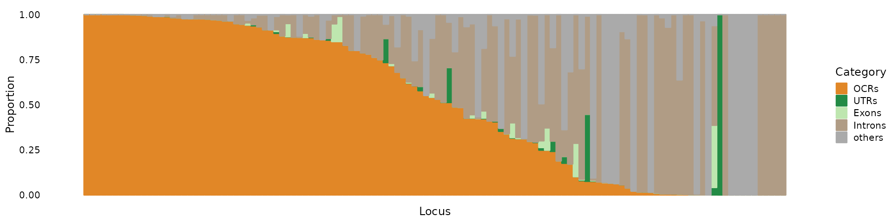
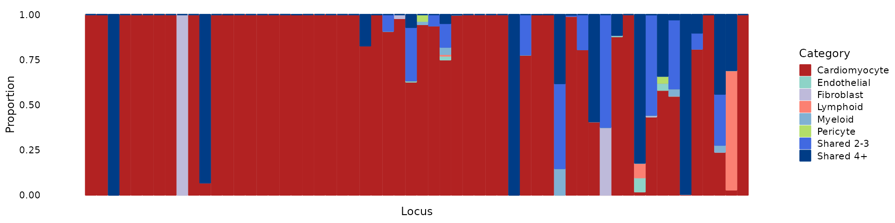

vignettes/partition_pip_tutorial.Rmd
partition_pip_tutorial.RmdHere, we show an example using AFib GWAS finemapping result and scATAC-seq data from our heart study. We assigned the likely cell type(s) through which the causal variants act in each locus using fine-mapped SNPs, and cell-type specific open chromatin regions (OCRs) obtained from scATAC-seq data.
Required input data:
Load R packages
Load fine-mapping summary statistics from the AFib study Keep SNPs with PIP > 1e-5, rename columns, and save as a GRanges object.
finemapstats <- readRDS(system.file("extdata", "AF.finemapping.sumstats.rds", package = "mapgen"))
finemapstats <- process_finemapping_sumstats(finemapstats,
snp = 'snp', chr = 'chr',
pos = 'pos', pip = 'susie_pip',
pval = 'pval', zscore = 'zscore',
cs = 'cs', locus = 'locus',
pip.thresh = 1e-5)# Processing fine-mapping summary statistics ...
# Select SNPs with PIP > 1e-05We can partition PIPs into different functional annotation categories.
Load genomic annotations (hg19).
genomic.annots <- readRDS(system.file("extdata", "genomic.annots.hg19.rds", package = "mapgen"))Load cell-type specific open chromatin regions (OCRs) (hg19).
genomic.annots$OCRs <- readRDS(system.file("extdata", "OCRs.hg19.gr.rds", package = "mapgen"))Create a list of the annotations, with priority in the order of OCRs, UTRS, Exons, and Introns.
annots.list <- list(OCRs = genomic.annots$OCRs,
UTRs = genomic.annots$UTRs,
Exons = genomic.annots$exons,
Introns = genomic.annots$introns)Unlike (below), it is OK to have overlapping annotations here. If a SNP is in multiple annotation categories, it will be assigned to the first ordered category.
sum.pip.res <- partition_pip_annots(finemapstats, annots.list)Sum of PIPs in each annotation category:
sum.pips <- sum.pip.res$sum.pips
head(sum.pips)# OCRs UTRs Exons Introns others
# 7 7.807975e-01 0.0000000000 0.000000e+00 0.219071200 0.0000000000
# 15 9.831023e-01 0.0000000000 0.000000e+00 0.006548894 0.0102402696
# 25 4.845244e-03 0.0006967073 1.186105e-05 0.992016899 0.0006346161
# 31 3.931823e-05 0.0000000000 0.000000e+00 0.999293385 0.0000000000
# 32 6.800833e-01 0.0000000000 0.000000e+00 0.141160792 0.1787247317
# 33 5.780216e-01 0.0239950449 0.000000e+00 0.314905904 0.0830566374Obtain a matrix of the proportion of PIPs in each annotation category.
locus.order <- rownames(sum.pips)[with(sum.pips, order(-OCRs, UTRs, Exons, Introns, others))]
sum.pips <- sum.pips[locus.order,]
prop.pip.mat <- sum.pips/rowSums(sum.pips)
head(prop.pip.mat)# OCRs UTRs Exons Introns others
# 728 1.0000000 0 0 0.000000e+00 0.000000e+00
# 862 1.0000000 0 0 0.000000e+00 0.000000e+00
# 1431 1.0000000 0 0 0.000000e+00 0.000000e+00
# 660 1.0000000 0 0 0.000000e+00 0.000000e+00
# 624 0.9999886 0 0 0.000000e+00 1.135265e-05
# 1416 0.9999696 0 0 3.041734e-05 0.000000e+00We can make a structure plot to show the proportion of PIPs in each annotation category.
categories <- c("OCRs", "UTRs", "Exons", "Introns", "others")
colors <- c(OCRs = "#E18727FF", UTRs = "#238b45", Exons = "#bee6af", Introns = "#B09C85FF", others = "#aaaaaa")
pip_structure_plot(prop.pip.mat, categories = categories, colors = colors)
We can partition PIPs into disjoint OCRs for different cell types.
Load a list of GRanges objects containing disjoint OCRs for different cell types.
disjoint.OCRs <- readRDS(system.file("extdata", "disjoint.OCRs.hg19.grlist.rds", package = "mapgen"))Sum PIPs within cell-type specific OCRs.
sum.pip.res <- partition_pip_regions(finemapstats, disjoint.OCRs)Sum of PIPs in each cell type OCR category:
sum.pips <- sum.pip.res$sum.pips
head(sum.pips)# Cardiomyocyte Endothelial Fibroblast Lymphoid Myeloid Pericyte
# 7 7.413873e-01 0.0000000000 0.00000000 0 0.000000e+00 0
# 15 5.155213e-02 0.0002890132 0.01230289 0 0.000000e+00 0
# 25 5.315708e-04 0.0000000000 0.00000000 0 1.364875e-05 0
# 31 3.931823e-05 0.0000000000 0.00000000 0 0.000000e+00 0
# 32 6.799067e-01 0.0000000000 0.00000000 0 0.000000e+00 0
# 33 2.886927e-01 0.0000000000 0.00000000 0 0.000000e+00 0
# Shared 2-3 Shared 4+
# 7 0.000000e+00 0.0000000000
# 15 4.332407e-05 0.0093814102
# 25 2.887397e-03 0.0002959630
# 31 0.000000e+00 0.0000000000
# 32 0.000000e+00 0.0001766484
# 33 1.821428e-03 0.0006501397Select loci with total PIPs in OCR > 0.25, and compute the proportion of PIPs partitioned in each cell type category.
# reorder the loci to match the previous figure
sum.pips <- sum.pips[locus.order, ]
# filter loci with total PIPs in OCR > 0.25
sum.pips.filtered <- sum.pips[rowSums(sum.pips) > 0.25,]
prop.pip.mat <- sum.pips.filtered/rowSums(sum.pips.filtered)
head(prop.pip.mat)# Cardiomyocyte Endothelial Fibroblast Lymphoid Myeloid Pericyte
# 862 1.0000000 0 0 0 0.000000e+00 0
# 1431 0.9999189 0 0 0 0.000000e+00 0
# 660 0.0000000 0 0 0 0.000000e+00 0
# 624 1.0000000 0 0 0 0.000000e+00 0
# 1682 1.0000000 0 0 0 0.000000e+00 0
# 645 0.9999885 0 0 0 1.153082e-05 0
# Shared 2-3 Shared 4+
# 862 0 0.000000e+00
# 1431 0 8.110793e-05
# 660 0 1.000000e+00
# 624 0 0.000000e+00
# 1682 0 0.000000e+00
# 645 0 0.000000e+00We can make a structure plot to show the proportion of PIPs in each cell type category.
categories <- c("Cardiomyocyte", "Endothelial", "Fibroblast", "Lymphoid",
"Myeloid", "Pericyte", "Shared 2-3", "Shared 4+")
colors <- c("#b22222", "#8DD3C7", "#BEBADA", "#FB8072",
"#80B1D3", "#B3DE69", "royalblue", "#003C86")
pip_structure_plot(prop.pip.mat, categories = categories, colors = colors)